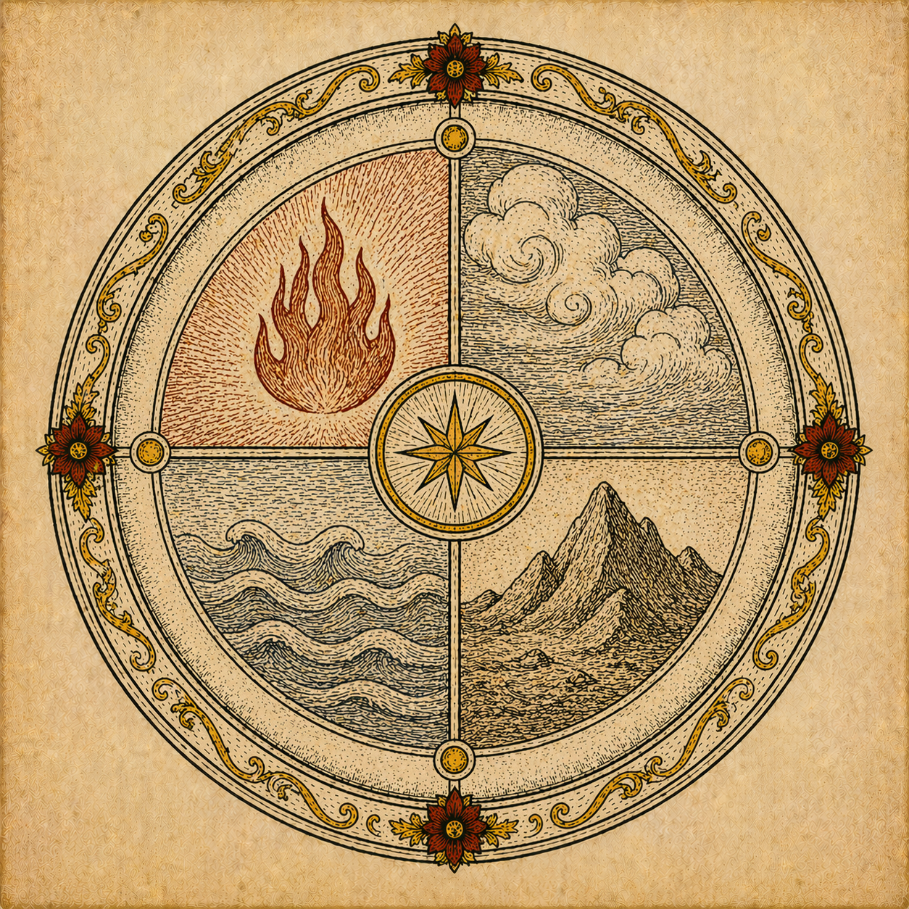

Jung & Alchemy
The depth psychologist as theologian manqué: a charitable and critical reading

The depth psychologist as theologian manqué: a charitable and critical reading
Introduction
Carl Gustav Jung (1875–1961) spent the second half of his career obsessed with medieval alchemy. He saw in it not a failed science but a profound unconscious theology.
Jung's engagement with alchemy began in earnest in the 1920s and culminated in his late masterworks. His central and controversial claim was that the alchemists — without knowing it — were not transforming lead into gold but projecting their own unconscious psychic contents onto the chemical substances before them. The opus was always, at its heart, a work of psychic transformation. The gold was always the Self.
This claim is both illuminating and insufficient. It illuminates because it is genuinely true that the alchemical imagination corresponds at many points with the phenomenology of the deep unconscious — with dream symbolism, with the imagery of individuation, with the logic of transformation through suffering. It is insufficient because the Christian alchemists were not only doing psychology. They were also doing theology — participating, however imperfectly, in the sacramental vision that matter itself is the medium of divine action.
To read Jung well is to take him seriously without capitulating to him. He is a great diagnostician of the soul's depths; he is not a reliable guide to the soul's God.
The Collected Works
Three landmark texts in which Jung laid out his alchemical psychology — written across more than two decades.
1944
Psychology and Alchemy
Collected Works, Vol. 12
Jung's first systematic treatment of alchemical symbolism in relation to the psychology of the unconscious. Using a series of dreams from an anonymous patient (later identified as the physicist Wolfgang Pauli), he demonstrated the structural parallels between medieval alchemical imagery and the spontaneous products of the deep unconscious. The stone, the king, the hermaphrodite, the filius philosophorum — all are shown to be symbols of the Self undergoing transformation. The book establishes the interpretive framework that governs all his subsequent alchemical work.
1956
Mysterium Coniunctionis
Collected Works, Vol. 14
Jung's magnum opus on alchemy, begun in his late seventies and completed after a serious illness he described as a near-death revelation. The work is his fullest treatment of the coniunctio — the union of opposites — as the supreme symbol of psychological and, he dared to suggest, metaphysical wholeness. The sacred marriage of Sol and Luna, Rex and Regina, Sulphur and Mercurius — all point to the integration of conscious and unconscious, masculine and feminine, light and dark, which constitutes the goal of individuation. For Jung this was also his autobiography: he called it "the crystallisation of my life's work."
1967
Alchemical Studies
Collected Works, Vol. 13 (posthumous collection)
A posthumously collected volume of essays spanning several decades, including Jung's commentary on the Chinese text The Secret of the Golden Flower (1929), his study of the Paracelsica, and his analysis of the Visions of Zosimos. The Golden Flower commentary was Jung's first significant engagement with Eastern alchemical material and with the mandala as a universal symbol of the Self. The Zosimos visions — some of the most remarkable and disturbing in all of alchemical literature — allowed Jung to trace the deepest roots of the Nigredo's mortificatio imagery.
Central Thesis & Christian Response
Jung's explanatory framework is powerful but does not have the last word. The Christian sacramental vision offers a deeper account.
Jung's argument runs as follows: the alchemist, working alone in his laboratory through long hours of heating, dissolving, and congealing substances, unconsciously projected his own inner states — his fears, his hopes, his undifferentiated unconscious contents — onto the matter before him. The gold he sought was always the gold of the psyche: the integrated, luminous Self. The putrefactio he induced in his substances mirrored the dark night of his own soul. He was, in Jung's famous phrase, doing "the work in matter as a mirror of the work in the soul."
The Christian theological response does not deny this insight; it questions its sufficiency. The alchemists were not only projecting. Many of them were also theologians, monks, and priests who understood their work as a participation in the continuing creation of the world — a cooperation with the transforming action of God in matter. The Christian doctrine of creatio bona (creation is good), of the Incarnation (in which God took on physical matter), and of the sacraments (in which physical matter becomes a vehicle of divine grace) all support the view that matter is genuinely capable of bearing the sacred. The alchemist's hope was not a delusion but a distorted anticipation of a real theology of creation.
In other words: projection and participation are not mutually exclusive. The alchemists were doing both at once — and the Christian reading, rather than dismissing the psychological dimension Jung identified, can incorporate it into a richer account. The depths of the psyche, far from being a substitute for God, may themselves be the medium through which God is most intimately approached: intimior intimo meo — "more inward than my own inwardness" (Augustine, Confessions III.6).
A Critical Reading
Depth psychology and Christian theology are genuine dialogue partners, but the conversation requires honesty on both sides.
Points of Convergence
Points of Divergence
The Crucial Friendship
The most sustained attempt at a genuine dialogue between Jungian depth psychology and orthodox Christian theology — productive, charged, and ultimately tragic.
Victor White OP · 1902–1960
God and the Unconscious
The Partnership
Victor White was an English Dominican priest, theologian, and trained analyst — almost uniquely placed to broker a serious conversation between Aquinas and Jung. He and Jung met in 1945 and immediately recognised in each other a rare intelligence committed to taking the other's discipline seriously. Jung saw in White a theologian who actually understood the unconscious; White saw in Jung a psychologist who had stumbled into the territory of the soul.
Their correspondence — eventually published posthumously — is one of the most intellectually and spiritually charged exchanges of the twentieth century. White's book God and the Unconscious (1952) remains the most sophisticated attempt to show where Jungian analysis and Christian theology can genuinely enrich each other, and where the line of incompatibility must be drawn.
White argued that Jung's empirical psychology of the God-image was entirely compatible with a properly understood Christian theology of God's actual existence — the two operate on different planes and need not conflict. The psychic reality of the God-image does not determine the metaphysical question of God's being; it only establishes that the human person is constitutively ordered toward the divine.
The Rupture
The friendship foundered on the problem of evil. In 1952, Jung published Answer to Job, in which he argued that God himself contains a dark, unconscious, evil dimension — and that Job's moral integrity surpassed God's. He called for a "quaternity" that would incorporate Satan as a fourth element of the divine. For Jung this was psychological phenomenology; for White it was heresy that struck at the goodness of God and the coherence of Christian theology.
White's Thomistic commitment to the privatio boni — evil as the privation of good, not a positive substance — meant he could not follow Jung here. Their correspondence became increasingly strained. White died in 1960, and their friendship was never restored to its former warmth.
The tragedy of the White–Jung correspondence is also its gift: it shows exactly where the line must be drawn. A "baptised Jungianism" that takes from Jung his phenomenology of the soul's depths, his insistence on shadow integration, and his symbolic imagination — while firmly declining his theology of evil and his agnosticism about God's real existence — remains both intellectually coherent and pastorally fertile.
The decisive question for man is: Is he related to something infinite or not? That is the telling question of his life. Only if we know that the thing which truly matters is the infinite can we avoid fixing our interest upon futilities.
C.G. Jung · Memories, Dreams, Reflections (1962) · Chapter XI
Synthesis
Depth psychology as an instrument of pastoral theology — not a replacement for it.
The pastoral tradition has always known that the spiritual life is not merely a matter of right belief and correct behaviour. It involves the whole person — including the deep, dark, turbulent, symbolically rich interior life that academic theology rarely touches. In this respect, Jungian analysis has given the Church a richer vocabulary for what it already knew: that the dark night of the soul is real, that the unconscious has its own wisdom, that transformation cannot be hurried or managed, and that the symbolic imagination is not a luxury but a necessity of the spiritual life.
A pastor who has understood the Jungian account of projection, shadow, and individuation will be better equipped to accompany people through grief, disillusionment, and the slow breaking of false selves. A theologian who has read Mysterium Coniunctionis will find Augustine, John of the Cross, and the medieval alchemists speaking more vividly — not because Jung replaces them but because he has cleaned the windows through which their light enters.
The limits of this appropriation must be clearly marked. Jung cannot supply what the Church alone possesses: the revealed name of God, the historical particularity of the Incarnation, the sacramental economy, the communion of saints, the promise of the resurrection. To use Jung as a guide into the depths and then to leave him there — thanking him for the descent — while following Another toward the ascent, is not intellectual dishonesty. It is the proper ordering of a genuine, if limited, gift.
Victor White never fully succeeded in the integration he sought. But the project he pioneered remains unfinished business — and the most promising site for its continuation is precisely the alchemical tradition he and Jung both loved, where the language of transformation is the mother tongue of both psychology and theology alike.
Continue the Study
The sources behind this conversation — alchemical, theological, Jungian, and integrative — are gathered in the bibliography.
Bibliography & Further Reading →